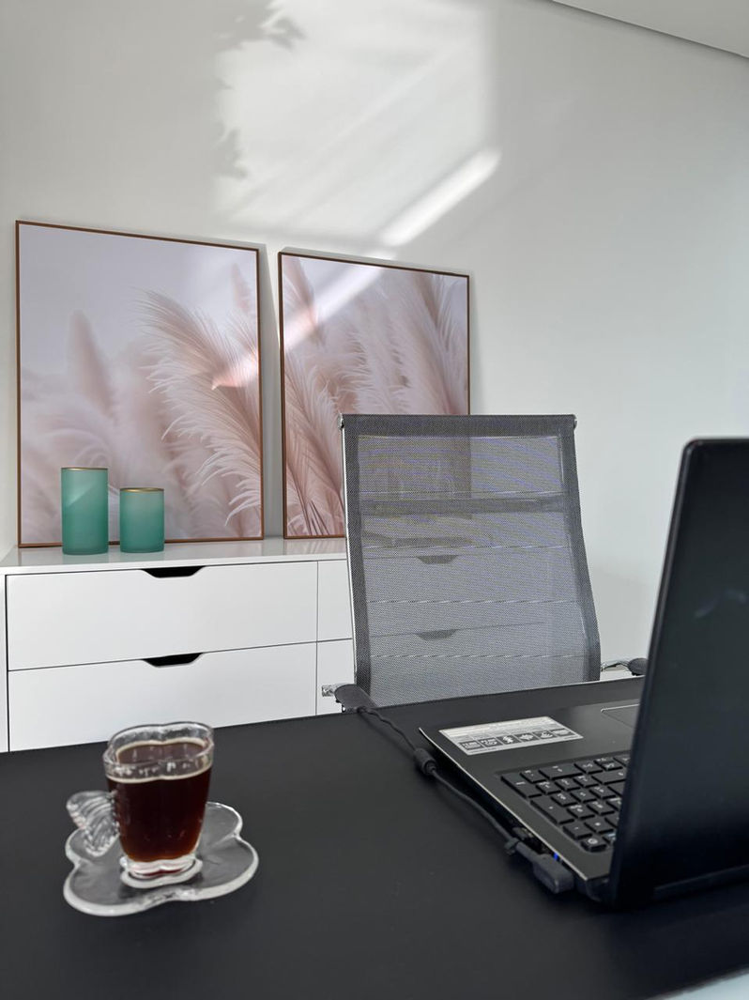
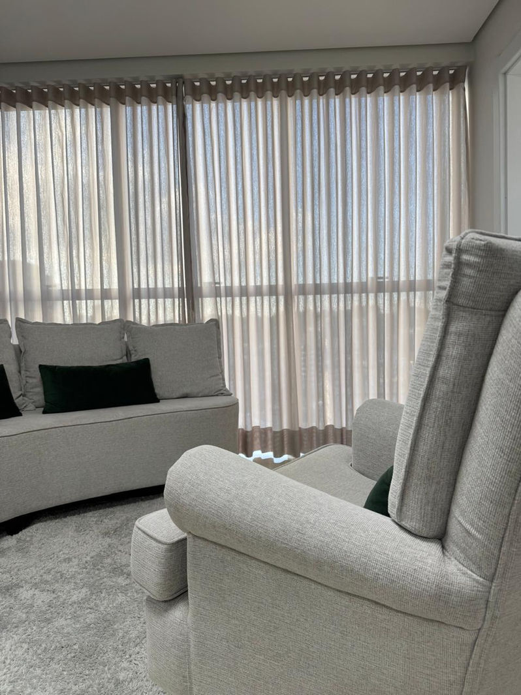

Ansiedade
Quando a preocupação não desliga e o corpo vive em alerta.
Psicóloga clínica · Caxias do Sul · Online
Terapia Cognitivo Comportamental e Terapia do Esquema para adultos, unindo a compreensão profunda da sua história pessoal a estratégias práticas do dia a dia.
5 estrelas no Doctoralia
Para quem é
Atendimento para adultos, em cinco frentes que costumam aparecer juntas.
Quando a preocupação não desliga e o corpo vive em alerta.
Padrões que se repetem nos vínculos, com parceiro, família ou trabalho.
Feridas emocionais antigas que seguem influenciando o presente.
Reações intensas que chegam antes de você conseguir pensar.
Vontade de se conhecer melhor, mesmo sem uma queixa específica.
Sobre mim
Sou Neila Patricia Machry, psicóloga clínica em Caxias do Sul.
Trabalho com abordagens que combinam entender de onde vêm os seus padrões com ferramentas para lidar com eles agora, no dia a dia.
Especialista.
Especialista.
Neuropsicóloga.
Especialista.

Abordagens
Foco na relação entre pensamentos, emoções e comportamentos. Identifica os padrões automáticos que causam sofrimento e constrói formas novas de responder.
Trabalha as feridas emocionais que vêm da infância e os esquemas que se formaram ali, como medo de abandono e perfeccionismo.
Consultório

Primeiro passo